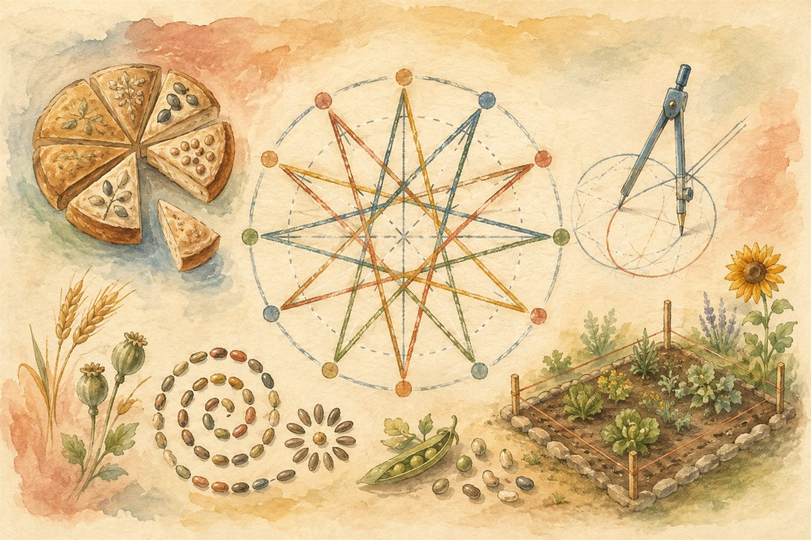

สมุดบทเรียนหลัก · การศึกษาแนววอลดอร์ฟ · ป.5
เรียนรู้ตัวเลขผ่านจังหวะ ลวดลาย และเรื่องราวจากธรรมชาติ — วาด แบ่ง ปลูก และวัด แทนการท่องจำ

วางจุด 0–9 ไว้บนวงกลม แล้วลากเส้นจากจุด i ไปยังจุด (i × แม่สูตร) หารเอาเศษด้วย 10 เมื่อลากครบทั้ง 10 เส้น จะปรากฏลวดลายดาวประจำแม่สูตรนั้น
แบ่งขนมปังกลมแต่ละก้อนออกเป็นชิ้นเท่า ๆ กัน แตะชิ้นที่ต้องการแรเงาเพื่อสร้างเศษส่วน แล้วลองเปรียบเทียบก้อนทั้งสอง
ปลูกตัวเลขสองต้น เมล็ดแต่ละเมล็ดคือตัวประกอบของต้นนั้น เมล็ดสีทองคือตัวประกอบที่ทั้งสองต้นมีร่วมกัน
ปรับความกว้างและความยาวของแปลงผัก สังเกตว่าพื้นที่และรั้วรอบแปลงเปลี่ยนไปอย่างไร
โจทย์: ถ้าแม่ต้องการล้อมรั้วรอบแปลงผักนี้ให้ครบทุกด้าน ต้องใช้ไม้รั้วยาวกี่เมตร?
เศษส่วนสองตัวจะบวกลบกันได้ก็ต่อเมื่อ "ชิ้นเท่ากัน" — คือมีตัวส่วนเท่ากัน เลือกเศษส่วนสองตัวด้านล่าง แล้วดูว่าเราทำให้ชิ้นเท่ากันได้อย่างไร
ตารางร้อยช่องนี้คือกุญแจ — แตะช่องเพื่อระบายสี แล้วสังเกตว่า เศษส่วน ทศนิยม และร้อยละ คือสิ่งเดียวกันที่เขียนคนละหน้าตา
3.472 → 4 คือส่วนสิบ (0.4), 7 คือส่วนร้อย (0.07), 2 คือส่วนพัน (0.002)
อ่านว่า "สามจุดสี่เจ็ดสอง"
เทียบทีละหลักจากซ้ายไปขวา — 0.5 มากกว่า 0.45 เพราะส่วนสิบคือ 5 กับ 4 (อย่าดูว่าตัวเลขยาวกว่าแล้วมากกว่า!)
ดูหลักถัดไป — ถ้า 5 ขึ้นไปปัดขึ้น ต่ำกว่า 5 ปัดลง เช่น 3.47 ปัดเป็นทศนิยม 1 ตำแหน่ง = 3.5
คูณ 10 = เลื่อนจุดไปขวา 1 ตำแหน่ง (2.5 × 10 = 25)
หาร 10 = เลื่อนจุดไปซ้าย 1 ตำแหน่ง (2.5 ÷ 10 = 0.25)
พื้นที่วัดพื้นราบ ส่วนปริมาตรวัดที่ว่างภายในกล่อง — ปรับกล่องด้านล่างแล้วนับลูกบาศก์ดูว่าใส่ได้กี่ก้อน
หน่วยปริมาตรใช้ ลูกบาศก์ เสมอ — ลบ.ซม. หรือ cm³ เพราะเรานับ "ก้อน" ไม่ใช่ "แผ่น"
มุมแหลม
เล็กกว่า 90° — เหมือนปลายดินสอที่เพิ่งเหลา
เท่ากับ 90° พอดี — มุมของหนังสือและกรอบหน้าต่าง
มากกว่า 90° แต่น้อยกว่า 180° — เหมือนพัดที่กางเกินครึ่ง
เท่ากับ 180° พอดี — เป็นเส้นตรงเส้นเดียว
โจทย์สุ่มใหม่ทุกครั้งไม่มีวันหมด — เลือกหัวข้อที่อยากฝึก พิมพ์คำตอบแล้วกดตรวจ ถ้าตอบผิดจะมีวิธีทำทีละขั้นให้ดู
เลือกหัวข้อเพื่อเริ่มฝึก
อ่านโจทย์ ลองคิดหาคำตอบด้วยตัวเองก่อน แล้วค่อยกดดูเฉลย
1. สวนแอปเปิลมีต้นไม้ 24 ต้น เก็บผลไปขายแล้ว 3/4 ของต้นไม้ทั้งหมด เหลือกี่ต้นที่ยังไม่ได้เก็บผล?
2. ระฆังวัดตีทุก 12 นาที และนกหวีดโรงเรียนดังทุก 18 นาที ถ้าทั้งสองดังพร้อมกันตอน 8:00 น. ครั้งต่อไปที่จะดังพร้อมกันคือกี่โมง?
3. แปลงนากว้าง 4.5 เมตร ยาว 6 เมตร ต้องใช้เมล็ดพันธุ์ 2 กรัมต่อตารางเมตร ต้องใช้เมล็ดพันธุ์ทั้งหมดกี่กรัม?
4. พ่อค้าซื้อส้มมา 240 ผล ราคาผลละ 3.50 บาท ขายไปในราคาผลละ 5 บาท แต่ส้มเน่าเสีย 1/8 ของทั้งหมดขายไม่ได้ พ่อค้าได้กำไรหรือขาดทุนกี่บาท?
5. ถังน้ำทรงสี่เหลี่ยมกว้าง 40 ซม. ยาว 50 ซม. สูง 30 ซม. ใส่น้ำเต็ม 3/4 ของถัง มีน้ำอยู่กี่ลูกบาศก์เซนติเมตร?
6. นักเรียน 5 คนสอบได้คะแนน 78, 85, 92, 68 และ 87 คะแนน ค่าเฉลี่ยของคะแนนทั้งห้องเป็นเท่าใด และมีกี่คนที่ได้คะแนนสูงกว่าค่าเฉลี่ย?
7. รถไฟออกจากสถานีเวลา 07:45 น. ใช้เวลาเดินทาง 2 ชั่วโมง 50 นาที จะถึงปลายทางเวลาใด?
8. ร้านหนังสือลดราคา 20% ทุกเล่ม แม่ซื้อหนังสือราคาเต็ม 350 บาท และสมุดราคาเต็ม 150 บาท ต้องจ่ายเงินทั้งหมดกี่บาท?
9. เชือกยาว 12 เมตร ตัดเป็นท่อนละ 3/4 เมตร จะได้ทั้งหมดกี่ท่อน?
10. สวนรูปสี่เหลี่ยมผืนผ้ากว้าง 15 เมตร ยาว 24 เมตร เจ้าของต้องการปูทางเดินกว้าง 1 เมตรรอบขอบสวนด้านใน เหลือพื้นที่ปลูกต้นไม้กี่ตารางเมตร?